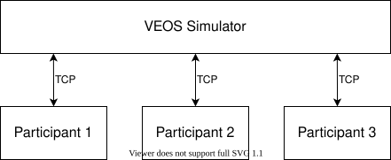
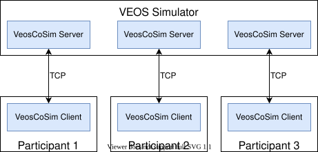
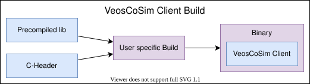
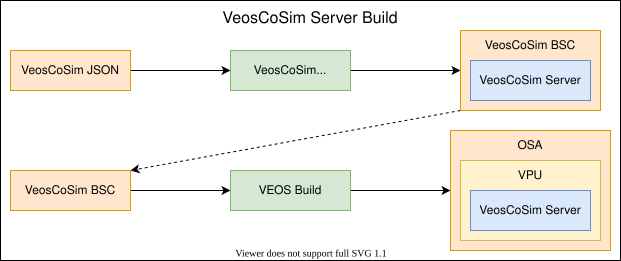

This document shows you how to connect third-party simulators to VEOS 5.4 patch 1 (Release 2022-A) and later to implement co-simulations.
Offline simulations running on VEOS can be coupled with third-party simulators, such as Simulink®, or instruction set simulators.

In a co-simulation scenario, the VEOS Simulator provides the overall simulation time, including the current simulation state, to the connected third-party simulators - the co-simulation participants. As a consequence, the participants have to react to the simulation time and state provided by the VEOS Simulator. They cannot influence or drive the simulation state.
The communication between the VEOS Simulator and the co-simulation participants is based on TCP.
VEOS provides the VeosCoSim co-simulation interface that is based on a client-server architecture:

The VeosCoSim client is distributed as a plain C API and a pre-compiled static library. To integrate the client into the simulation, you have to compile and link the header file and the pre-compiled lib to a binary that connects the VeosCoSim client to the third-party simulator's API.

To integrate the VeosCoSim server into the VEOS Simulator, you have to create and configure a VeosCoSim JSON description file, and generate a BSC file from it by using the VeosCoSimBscGenerator. The VeosCoSimBscGenerator is a command line utility that generates a VeosCoSim BSC containing a VeosCoSim server from a VeosCoSim JSON file.

VeosCoSim requires at least VEOS 5.4 patch 1 (Release 2022-A).
To configure the VeosCoSim server for a specific co-simulation participant, the co-simulation interface must be described in a participant-specific VeosCoSim JSON description file. You have to specify:
Below is an annotated example:
{
// The name of the generated BSC.
// Must be unique in an OSA.
// This parameter is mandatory.
"TargetName": "Generic_Bridge",
// The synchronization time between VEOS and the participant in seconds.
// This parameter is mandatory.
// Every <SampleTime> seconds of the virtual simulation time,
// bus messages and I/O signals will be exchanged between
// VEOS and the participant.
// Increasing this time interval will speed up the simulation,
// but bus messages and I/O signals will be exchanged later.
// Decreasing this time interval will slow down the simulation,
// but bus messages and I/O signals will be exchanged sooner.
"SampleTime": 0.001,
// A value indicating whether bus messages transmitted to VEOS can be received
// at the next step.
// This parameter is optional.
"NoLoopBackMessages": true,
// The TCP port of the VeosCoSim server.
// This parameter is optional.
// Specify 0 for a dynamic port.
"Port": 0,
// The CAN controllers of the participant.
// This list is optional.
"CanControllers": [
{
// The name of the CAN controller.
// This parameter is mandatory.
"Name": "CanController1",
// The baud rate of the CAN controller.
// Must be positive.
// This parameter is mandatory.
// The unit is bits per second.
"BaudRate": 500000,
// The data phase baud rate of the CAN controller for CAN FD.
// Must be positive.
// This parameter is mandatory.
// The unit is bits per second.
"DataPhaseBaudRate": 2000000,
// The name of the connected CAN channel.
// This parameter is optional.
// If it is set, the controller will be connected automatically
// to other CAN controllers with the same channel name during the
// import using the VEOS Player.
"ChannelName": "CanChannel1"
},
// Further CAN controllers.
{
"Name": "CanController2",
"BaudRate": 500000,
"DataPhaseBaudRate": 2000000,
"ChannelName": "CanChannel2"
}
],
// The LIN controllers of the participant.
// This list is optional.
"LinControllers": [
{
// The name of the LIN controller.
// This parameter is mandatory.
"Name": "LinController1",
// The baud rate of the LIN controller.
// Must be positive.
// This parameter is mandatory.
// The unit is bits per second.
"BaudRate": 19200,
// The name of the connected LIN channel.
// This parameter is optional.
// If it is set, the controller will be connected automatically
// to other LIN controllers with the same channel name during the
// import using the VEOS Player.
"ChannelName": "LinChannel1",
// A value indicating whether the LIN controller is a LIN commander or LIN responder.
// This parameter is optional.
// Changing this value will only affect the icon shown in the VEOS Player.
"IsCommander": true
},
// Further LIN controllers.
{
"Name": "LinController2",
"BaudRate": 19200,
"ChannelName": "LinChannel2",
"IsCommander": false
}
],
// The ETH controllers for the participant.
// This list is optional.
"EthControllers": [
{
// The name of the ETH controller.
// This parameter is mandatory.
"Name": "EthController1",
// The speed of the ETH controller.
// Must be positive.
// This parameter is mandatory.
// The unit is megabits per second.
"Speed": 1000,
// The name of the connected ETH channel.
// This parameter is optional.
// If it is set, the controller will be connected automatically
// to other ETH controllers with the same channel name during the import using the VEOS Player.
"ChannelName": "EthChannel1"
},
// Further ETH controllers.
{
"Name": "EthController2",
"Speed": 10000,
"ChannelName": "EthChannel2"
}
],
// The input signals of the participant.
// This list is optional.
"IoInputSignals": [
{
// The name of the input signal.
// This parameter is mandatory.
"Name": "MyInput1",
// The data type of the input signal.
// This parameter is mandatory.
// The following values are valid:
// bool, int8, int16, int32, int64, uint8, uint16, uint32, uint64, float32, float64.
"DataType": "uint32",
// The name of the input signal group for this signal.
// This parameter is optional.
// However, every input signal must have an I/O signal group.
// If the group name is not specified, it will be set to the name of the VeosCoSim BSC.
// If Groups is specified, this parameter is discarded.
"GroupName": "MyInputs",
// The group hierarchy in which the signal shall be placed.
// This parameter is optional.
// If it is specified, it will be used and GroupName is discarded.
"Groups": [
"SuperGroup",
"Subgroup",
"SubSubgroup"
]
},
// Further input signals.
{
"Name": "MyInput2",
"DataType": "bool",
"GroupName": "MyOtherInputs"
}
],
// The output signals of the participant.
// This list is optional.
"IoOutputSignals": [
{
// The name of the output signal.
// This parameter is mandatory.
"Name": "MyOutput1",
// The data type of the output signal.
// This parameter is mandatory.
// The following values are valid:
// bool, int8, int16, int32, int64, uint8, uint16, uint32, uint64, float32, float64.
"DataType": "uint32",
// The name of the output signal group for this signal.
// This parameter is optional.
// However, every output signal must have a signal group.
// If the group name is not specified, it will be set to the name of the VeosCoSim BSC.
// If Groups is specified, this parameter is discarded.
"GroupName": "MyOutputs",
// The group hierarchy in which the signal shall be placed.
// This parameter is optional.
// If it is specified, it will be used and GroupName is discarded.
"Groups": [
"SuperGroup",
"Subgroup",
"SubSubgroup"
]
},
// Further output signals.
{
"Name": "MyOutput2",
"DataType": "bool",
"GroupName": "MyOtherOutputs"
}
]
}
To create a VeosCoSim server for a specific participant, you have to generate an intermediate VeosCoSim BSC file from the related VeosCoSim JSON description file. You have to use the VeosCoSimBscGenerator for this.
The generated VeosCoSim BSC is 64-bit only. You can build it for Windows and Linux.
To generate a VeosCoSim BSC, use the following command in the root directory of the extracted VeosCoSim zip:
.\servergenerator\bin\VeosCoSimBscGenerator.exe --input "<VeosCoSim JSON file path>" --output "<VeosCoSim BSC file path>"
The VeosCoSim BSC can be imported into any OSA file using the VEOS Player or the command line utility veos-build.
Use the VEOS Player or the command line utility veos-model to connect the I/O signals and the bus controllers of the VeosCoSim BSC to other models in the same OSA.
The utilities VEOS Player and veos-build are only available on Windows, the utility veos-model is available on Windows and Linux.
After loading the OSA file to the simulator, VeosCoSim clients can connect to the VeosCoSim servers. Each VeosCoSim server must have exactly one connected VeosCoSim client. Each VeosCoSim client can connect to only one VeosCoSim server. If the VEOS simulation was started, the VEOS simulator stays at the virtual simulation time 0 until all VeosCoSim clients are connected.
If the connection to a VeosCoSim client is closed, the simulation terminates with an error.
You must use the VeosCoSim client to properly connect the co-simulator to the VeosCoSim server. To use the VeosCoSim client, include the following C header file:
Also, link one of the following static libraries:
Or one of the following dynamic libraries:
VeosCoSim provides a simple VeosCoSim client example executable that can be used to connect to any VeosCoSim server. However, this executable is only intended for demonstrative purposes.
Before using any other VeosCoSim function, a VeosCoSim handle has to be created by calling the VeosCoSim_CreateMI function:
VeosCoSim_Handle handle = VeosCoSim_CreateMI();
After using VeosCoSim, the handle has to be destroyed by calling the VeosCoSim_DestroyMI function:
VeosCoSim_DestroyMI(handle);
Despite VeosCoSim_CreateMI and VeosCoSim_DestroyMI all functions return a value of the VeosCoSim_Result enumeration. The following values are possible:
VeosCoSim_Result_OK: The function call was successful. VeosCoSim_Result_Argument: At least one of the arguments passed to the function was invalid. In this case, the log callback passed to the VeosCoSim_ConnectMI function will be called with a specific error message. VeosCoSim_Result_Error: A serious error occurred with no recovery. After receiving this result, the connection should be closed and the handle should be destroyed. VeosCoSim_Result_Empty: No more bus message available. This result will only be returned by the bus-related receive functions. VeosCoSim_Result_Full: No more space left for a new bus message. This result will only be returned by the bus-related transmit functions.
To establish the connection to the VeosCoSim server, call the VeosCoSim_ConnectMI function:
void OnLogCallback(VeosCoSim_Severity severity, const char* text) {
printf("%s\n", text);
}
VeosCoSim_ConnectMI(handle, "127.0.0.1", "Example.VeosCoSim", OnLogCallback);
To log VeosCoSim API call errors, it is recommended to specify the log callback.
Note: To specify the TCP port refer to TCP Ports.
To close the connection to the VeosCoSim server, call the VeosCoSim_DisconnectMI function:
VeosCoSim_DisconnectMI(handle);
Note: If the connection is closed during a running simulation, the simulation will terminate with an error.
To run the co-simulation, first, it has to be started by calling the VeosCoSim_StartNonBlockingMI function. After that, the co-simulation will run by calling the VeosCoSim_GetNextCommandMI function and VeosCoSim_FinishCommandMI function alternately in a loop.
VeosCoSim_RuntimeConfiguration config = {0};
VeosCoSim_StartNonBlockingMI(handle, config);
while (1) {
VeosCoSim_Time simulationTime = 0;
VeosCoSim_Command command = VeosCoSim_Command_None;
VeosCoSim_Result result = VeosCoSim_GetNextCommandMI(handle, &simulationTime, &command);
if (result == VeosCoSim_Result_Error) {
// Simulation was unloaded in VEOS or another kind of error occurred.
// Note: Due to a limitation in VEOS, there is currently no official "end of co-simulation" result.
break;
}
switch (command) {
case VeosCoSim_Command_Start:
// Simulation was started in VEOS
break;
case VeosCoSim_Command_Stop:
// Simulation was stopped in VEOS
break;
case VeosCoSim_Command_TimeTrigger:
// Next simulation time step triggered by VEOS
break;
default:
// This should not happen
break;
}
VeosCoSim_FinishCommandMI(handle);
}
The co-simulation is handled with callbacks that are passed to the VeosCoSim_RunMI function:
void OnSimulationStartedCallback(const VeosCoSim_Time time, void* userData) {
// Will be called when the simulation was started in VEOS
}
void OnSimulationStoppedCallback(const VeosCoSim_Time time, void* userData) {
// Will be called when the simulation was stopped in VEOS
}
void OnSimulationStepCallback(const VeosCoSim_Time time, void* userData) {
// Next simulation time step triggered by VEOS
}
VeosCoSim_RuntimeConfiguration config = {0};
config.startSimulationCallback = OnSimulationStartedCallback;
config.stopSimulationCallback = OnSimulationStoppedCallback;
config.timeTriggerCallback = OnSimulationStepCallback;
VeosCoSim_RunMI(handle, config);
The function will not return until the simulation is unloaded in VEOS or until VeosCoSim_DisconnectMI is called. Note:
The state change callbacks are called each time the VEOS simulator changes its state.
The simulation callbacks are called at virtual simulation times that are dividable by the step time specified in the VeosCoSim JSON file.
To read input signals, either register the ioReadCallback callback, call the VeosCoSim_IoReadMI function, or both:
void OnInputSignalChanged(const VeosCoSim_Time simulationTime, VeosCoSim_IoSignalId id, const void* value1, void* userData) {
// Will only be called if the input signal identified by the **id** changed since the last time trigger
}
VeosCoSim_RuntimeConfiguration config = {0};
config.ioReadCallback = OnInputSignalChanged;
VeosCoSim_StartNonBlockingMI(handle, config);
while (1) {
VeosCoSim_Time simulationTime = 0;
VeosCoSim_Command command = VeosCoSim_Command_None;
VeosCoSim_Result result = VeosCoSim_GetNextCommandMI(handle, &simulationTime, &command);
if (result == VeosCoSim_Result_Error) {
break;
}
switch (command) {
case VeosCoSim_Command_TimeTrigger:
uint32_t length;
double value2;
VeosCoSim_IoReadMI(handle, 1, &length, &value2); // Gets the latest value for input signal with the id 1
break;
}
VeosCoSim_FinishCommandMI(handle);
}
Note: The input signal changed callback will be fired by the VeosCoSim_GetNextCommandMI function.
To receive bus messages, either register the bus message received callback (canMessageReceivedCallback, linMessageReceivedCallback or ethMessageReceivedCallback), or call the bus message receive function (VeosCoSim_CanReceiveMessageMI, VeosCoSim_LinReceiveMessageMI or VeosCoSim_EthReceiveMessageMI).
Below is an example showing the usage of a callback:
void OnCanMessageReceivedCallback(const VeosCoSim_Time simulationTime, const VeosCoSim_CanMessage* message, void*) {
// Will be called if a new CAN message was received
}
VeosCoSim_RuntimeConfiguration config = {0};
config.canMessageReceivedCallback = OnCanMessageReceivedCallback;
VeosCoSim_StartNonBlockingMI(handle, config);
while (1) {
VeosCoSim_Time simulationTime = 0;
VeosCoSim_Command command = VeosCoSim_Command_None;
VeosCoSim_Result result = VeosCoSim_GetNextCommandMI(handle, &simulationTime, &command);
if (result == VeosCoSim_Result_Error) {
break;
}
VeosCoSim_FinishCommandMI(handle);
}
Below is an example showing the usage of a receive function:
VeosCoSim_RuntimeConfiguration config = {0};
VeosCoSim_StartNonBlockingMI(handle, config);
while (1) {
VeosCoSim_Time simulationTime = 0;
VeosCoSim_Command command = VeosCoSim_Command_None;
VeosCoSim_Result result = VeosCoSim_GetNextCommandMI(handle, &simulationTime, &command);
if (result == VeosCoSim_Result_Error) {
break;
}
switch (command) {
case VeosCoSim_Command_TimeTrigger:
while (true) {
VeosCoSim_CanMessage message = {0};
if (VeosCoSim_CanReceiveMessageMI(handle, &message) == VeosCoSim_Result_Empty) {
break;
}
// Handle message
}
break;
}
VeosCoSim_FinishCommandMI(handle);
}
Note:
- If a bus message received callback for a specific protocol is registered, it is not possible to receive bus messages using the corresponding receive function.
- To receive all bus messages of a protocol, call the respective bus message receive function until it returns VeosCoSim_Result_Empty.
- Do not call the bus message receive function in a callback handler other than the simulation post step callback. Otherwise, it is not guaranteed that the function returns the most recent bus message.
- If a bus message received callback for a specific protocol is not registered, a received bus message will be buffered. Currently, the buffer size is 512 bus messages for each protocol. If the buffer is full, the oldest messages are overwritten.
- The timestamp property of a received bus message contains the virtual simulation time, at which the bus message arrived at the VeosCoSim server.
The bus message transmit functions can be called in any callback handler. The timestamp property of transmission bus messages will be ignored. The VeosCoSim client has only a limited buffer for bus messages. Currently, the VeosCoSim client can't buffer more than 512 bus messages for each bus protocol. If the buffer is full, the transmit function returns VeosCoSim_Result_Full.
VeosCoSim provides an example in the .\examples\Example subfolder.
Open the .\examples\Example.json file for an example VeosCoSim JSON description file that contains the interface for several bus controllers
and I/O signals.
Run .\examples\GenerateVeosCoSimBscs.bat to generate a VeosCoSim BSC from each VeosCoSim JSON file in the same directory.
Import the VeosCoSim BSC files manually into an OSA file using the VEOS Player or veos-build.
Connect the I/O signals and bus controllers of the VeosCoSim servers to other models in the OSA and start the simulation.
Start .\examples\client\VeosCoSimTestClient.exe on Windows or ./examples/client/VeosCoSimTestClient on Linux to start a simple co-simulation.
Note: The example VeosCoSim test client can be used for any VeosCoSim server and on any computer. The VeosCoSim server is identified by the name
you have to pass using the command line. A VeosCoSim test client on Linux can connect to a VeosCoSim server running on Windows and vice versa.
Use the following syntax to call the VeosCoSim test client:
<path to VeosCoSimTestClient> --host 10.20.30.40 --name Test
If the host parameter is not specified, "127.0.0.1" is used. If the name is not specified, "Example" is used.
Ensuring the unique mapping of TCP ports can be a difficult task. Therefore, VeosCoSim provides a VeosCoSim port mapper so that you do not have to specify TCP ports manually. The first VeosCoSim BSC in an OSA file also starts the VeosCoSim port mapper. Each VeosCoSim server starts its own TCP server at the specified TCP port (see VeosCoSim JSON file) or 0 for a dynamic TCP port and registers the TCP port with the VeosCoSim port mapper.
The VeosCoSim client asks the VeosCoSim port mapper for the actual TCP port of the VeosCoSim server and then it connects to this port.
The default TCP port of the VeosCoSim port mapper is 27072. It can be reconfigured using the VEOSCOSIM_PORTMAPPER_PORT environment variable.
Note: The environment variable has to be specified for the VeosCoSim servers and the VeosCoSim clients. For the VeosCoSim servers, it has to be specified before starting the VeosKernel.exe:
set VEOSCOSIM_PORTMAPPER_PORT=1234
"C:\Program Files\dSPACE VEOS 5.4\Bin\VeosKernel.exe"
For the VeosCoSim clients, it has to be specified before starting each VeosCoSim client:
set VEOSCOSIM_PORTMAPPER_PORT=1234
VeosCoSimStubClient.exe
Alternatively, the environment variable has to be specified globally before starting any VEOS process or VeosCoSim client.
The VeosCoSim client can measure, how long each trigger-, IO-, CAN-, LIN- and ethernet-callback takes. This feature can be enabled using the environment variable VEOSCOSIM_TRACEEVENTS:
set VEOSCOSIM_TRACEEVENTS=C:\Temp\MyTraceEvents.csv
ExampleVeosCoSimClient.exe
The variable content must be a valid file path. The file may or may not exist, but the directory must exist.
If the environment variable is set and the file is writable, then the VeosCoSim client adds up all measured time for each callback for each simulation time. If a callback is not executed for a specific simulation time an empty entry will be written.
The result file may look like this:
SimulationTime,Step,IO,CAN,LIN,ETH
0.000000000,0.000015400,0.000591200,,,
0.001000000,0.000000800,,,,
0.002000000,0.001400400,0.071920082,,0.514203998,
0.003000000,0.000000300,,,,
The VeosCoSim client provides an optional extended trace logging. If enabled, almost every function call to the VeosCoSim client including the passed parameters will be logged to STDOUT. Also, all other log messages of the VeosCoSim client will be logged to STDOUT.
To enable this extended trace logging, set the environment variable VEOSCOSIM_EXTENDED_TRACELOGGING to a value != 0. The output will look like this:
INFO [37664] VeosCoSim client (protocol version: 10, build id: 0) initialized.
INFO [37664] Connecting to VeosCoSim server 'Example_Bridge' at 127.0.0.1 ...
INFO [37664] Connected to VeosCoSim server 'Example_Bridge' at 127.0.0.1:58624.
TRACE [37664] VeosCoSim_GetAvailableChannelsMI(0x3750b7c0, 0x37b97e8, 0x37b97f0)
TRACE [37664] VeosCoSim_IoGetAvailableSignalsMI(0x3750b7c0, 0x37b97ec, 0x37b97f8)
TRACE [37664] VeosCoSim_RunMI(0x3750b7c0, [0x378bb10, 0x378bb80, 0x0, 0x378bbf0, 0x378b670, 0x378af50, 0x378b830, 0x378b210, 0x0])
This chapter contains the description of all functions and types of the VeosCoSim client API.
Note: For each *MI function except VeosCoSim_CreateMI and VeosCoSim_DestroyMI there is also a function without the MI postfix and without the handle parameter. These functions use a hidden handle. If only a connection to a single VeosCoSim server is needed, the functions without the MI postfix can be used. If connections to multiple VeosCoSim server are needed, the MI-functions with unique handles must be used.
The VeosCoSim_BusChannelInfo structure contains all information of a bus controller.
#define VEOSCOSIM_MAX_NAME_LENGTH 1024
typedef uint32_t VeosCoSim_ChannelId;
typedef struct VeosCoSim_BusChannelInfo {
VeosCoSim_ChannelId id;
VeosCoSim_BusProtocol busProtocol;
char controllerName[VEOSCOSIM_MAX_NAME_LENGTH];
} VeosCoSim_BusChannelInfo;
id
The unique identifier of the bus controller.
busProtocol
The VeosCoSim_BusProtocol of the bus controller.
controllerName
The name of the controller.
The VeosCoSim_BusProtocol enumeration contains the bus protocol type of a bus.
typedef uint32_t VeosCoSim_BusProtocol;
enum {
VeosCoSim_BusProtocol_CAN = 1,
VeosCoSim_BusProtocol_LIN,
VeosCoSim_BusProtocol_ETH
};
VeosCoSim_BusProtocol_CAN
The bus protocol is of type CAN.
VeosCoSim_BusProtocol_LIN
The bus protocol is of type LIN.
VeosCoSim_BusProtocol_ETH
The bus protocol is of type ETH.
The reason, VeosCoSim_BusProtocol is a typedef and an unnamed enumeration, is, because it's used inside of structs. This approach forces the compiler to always use 4 byte for the storage.
The VeosCoSim_CanMessage structure contains the information of a CAN message.
#define VEOSCOSIM_CAN_MESSAGE_MAX_LENGTH 64
#define VEOSCOSIM_CAN_MESSAGE_FLAG_EXT 1
#define VEOSCOSIM_CAN_MESSAGE_FLAG_BRS 2
#define VEOSCOSIM_CAN_MESSAGE_FLAG_FD 4
#define VEOSCOSIM_CAN_MESSAGE_FLAG_TX 8
#define VEOSCOSIM_CAN_MESSAGE_FLAG_ERR 16
#define VEOSCOSIM_CAN_MESSAGE_FLAG_DROP 32
typedef struct VeosCoSim_CanMessage {
VeosCoSim_Time timestamp;
VeosCoSim_ChannelId channelId;
uint32_t identifier;
uint32_t flags;
uint32_t length;
uint8_t data[VEOSCOSIM_CAN_MESSAGE_MAX_LENGTH];
} VeosCoSim_CanMessage;
timestamp
The VeosCoSim_Time containing the simulation time when the CAN message was received at the VeosCoSim server.
channelId
The VeosCoSim_ChannelId of the bus controller sending or receiving the CAN message.
identifier
The id of the CAN message.
flags
The flags of the CAN message. Can be one of the following:
| Flag | Direction | Description |
|---|---|---|
| VEOSCOSIM_CAN_MESSAGE_FLAG_EXT | Transmit / Receive | Extended identifier |
| VEOSCOSIM_CAN_MESSAGE_FLAG_BRS | Transmit / Receive | Bit rate switch |
| VEOSCOSIM_CAN_MESSAGE_FLAG_FD | Transmit / Receive | Flexible data rate format |
| VEOSCOSIM_CAN_MESSAGE_FLAG_TX | Receive only | Transmit direction |
| VEOSCOSIM_CAN_MESSAGE_FLAG_ERR | Receive only | Error indicator |
| VEOSCOSIM_CAN_MESSAGE_FLAG_DROP | Receive only | Queue drop |
length
The length of the CAN message data.
data
The CAN message data.
The VeosCoSim_CanReceiveMessageMI function receives a new CAN message from the VeosCoSim server.
VeosCoSim_Result VeosCoSim_CanReceiveMessageMI(
[in] VeosCoSim_Handle handle,
[out] VeosCoSim_CanMessage* message
);
[out] handle
The VeosCoSim_Handle.
[out] message
A pointer to VeosCoSim_CanMessage instance or NULL, if there is no CAN message available.
A VeosCoSim_Result describing the success of the function:
If the canMessageReceivedCallback is registered, the CAN message can't be received by calling VeosCoSim_CanReceiveMessageMI.
The VeosCoSim_CanTransmitMessageMI function transmits a CAN message to the VeosCoSim server.
VeosCoSim_Result VeosCoSim_CanTransmitMessageMI(
[in] VeosCoSim_Handle handle,
[in] const VeosCoSim_CanMessage* message
);
[in] handle
The VeosCoSim_Handle.
[in] message
A pointer to a VeosCoSim_CanMessage that will be transmitted.
A VeosCoSim_Result describing the success of the function:
The VeosCoSim_Command enumeration contains the possible commands that can be returned by the VeosCoSim_GetNextCommandMI function.
typedef enum VeosCoSim_Command {
VeosCoSim_Command_None,
VeosCoSim_Command_Start,
VeosCoSim_Command_Stop,
VeosCoSim_Command_Terminate,
VeosCoSim_Command_TimeTrigger
} VeosCoSim_Command;
VeosCoSim_Command_None
No command.
VeosCoSim_Command_Start
Start simulation command.
VeosCoSim_Command_Stop
Stop simulation command.
VeosCoSim_Command_Terminate
Terminate simulation command.
VeosCoSim_Command_TimeTrigger
Time trigger (step) simulation command.
The VeosCoSim_ConnectConfiguration contains the configuration that is required to connect to the VeosCoSim server.
typedef struct VeosCoSim_ConnectConfiguration {
const char* remoteIpAddress;
const char* name;
VeosCoSim_LogCallback logCallback;
uint16_t remotePort;
uint16_t localPort;
} VeosCoSim_ConnectConfiguration;
remoteIpAddress
The remote IP address of the computer running the VeosCoSim server. This value must be set.
name
The name of the VeosCoSim server. Either this name or the remotePort must be set. If only the name is set, the port mapper is used to determine the remote port. If both, the name and the remotePort are set, only the remotePort will be used to establish the connection.
logCallback
An optional VeosCoSim_LogCallback which will be called every time the VeosCoSim client logs a message.
remotePort
The remote port of the VeosCoSim server. Either this port or the name must be set. If the remote port is set, it will be used to establish the connection.
localPort
The local port of the VeosCoSim client. This value should only be changed, if the communication to the VeosCoSim server shall be tunneled. Refer to the documentation of the used tunneling software how to configure the local port correctly.
The VeosCoSim_ConnectionState enumeration contains the possible connection states.
typedef enum VeosCoSim_ConnectionState {
VeosCoSim_ConnectionState_Disconnected,
VeosCoSim_ConnectionState_Connected,
} VeosCoSim_ConnectionState;
VeosCoSim_ConnectionState_Disconnected
Disconnected from VeosCoSim server.
VeosCoSim_ConnectionState_Connected
Connected to VeosCoSim server.
The VeosCoSim_ConnectMI function connects the VeosCoSim client to the VeosCoSim server.
typedef void (*VeosCoSim_LogCallback)(
[out] VeosCoSim_Severity severity,
[out] const char* logMessage
);
VeosCoSim_Result VeosCoSim_ConnectMI(
[in] VeosCoSim_Handle handle,
[in] const char* ipAddress,
[in] const char* name,
[in, optional] VeosCoSim_LogCallback logCallback
);
[in] handle
The VeosCoSim_Handle.
[in] ipAddress
The IP address of the VeosCoSim server as string.
[in] name
The case sensitive name of the VeosCoSim server (aka the name of the VeosCoSim BSC) to connect to as string.
[in, optional] logCallback
An optional VeosCoSim_LogCallback which will be called every time the VeosCoSim client logs a message. The VeosCoSim_Severity parameter contains the severity. The logMessage parameter is the string containing the error.
A VeosCoSim_Result describing the success of the function:
The TCP port cannot be specified here. See chapter TCP Ports.
The VeosCoSim_Connect2MI function connects the VeosCoSim client to the VeosCoSim server. This function extends the VeosCoSim_ConnectMI function with the opportunity to pass a local TCP port. Setting a specific local TCP port is only required, if the communication of VeosCoSim shall be tunneled. In all other cases, the local TCP port should not be set. Also, it is possible to set the remote port. In this case, the port mapper is bypassed.
VeosCoSim_Result VeosCoSim_Connect2MI(
[in] VeosCoSim_Handle handle,
[in] VeosCoSim_ConnectConfiguration config
);
[in] handle
The VeosCoSim_Handle.
[in] config
The VeosCoSim_ConnectConfiguration.
A VeosCoSim_Result describing the success of the function:
The VeosCoSim_CreateMI function creates a VeosCoSim_Handle.
VeosCoSim_Handle VeosCoSim_CreateMI(void);
-/-
A VeosCoSim_Handle if the function succeeded, or NULL in case of an error.
The VeosCoSim_DataType enumeration contains all data types for IO signals.
typedef uint32_t VeosCoSim_DataType;
enum {
VeosCoSim_DataType_Bool = 1,
VeosCoSim_DataType_Int8,
VeosCoSim_DataType_Int16,
VeosCoSim_DataType_Int32,
VeosCoSim_DataType_Int64,
VeosCoSim_DataType_UInt8,
VeosCoSim_DataType_UInt16,
VeosCoSim_DataType_UInt32,
VeosCoSim_DataType_UInt64,
VeosCoSim_DataType_Float32,
VeosCoSim_DataType_Float64
};
VeosCoSim_DataType_Bool
The data type is boolean (bool_t).
VeosCoSim_DataType_Int8
The data type is signed 8 bit integer (int8_t).
VeosCoSim_DataType_Int16
The data type is signed 16 bit integer (int16_t).
VeosCoSim_DataType_Int32
The data type is signed 32 bit integer (int32_t).
VeosCoSim_DataType_Int64
The data type is signed 64 bit integer (int64_t).
VeosCoSim_DataType_UInt8
The data type is unsigned 8 bit integer (uint8_t).
VeosCoSim_DataType_UInt16
The data type is unsigned 16 bit integer (uint16_t).
VeosCoSim_DataType_UInt32
The data type is unsigned 32 bit integer (uint32_t).
VeosCoSim_DataType_UInt64
The data type is unsigned 64 bit integer (uint64_t).
VeosCoSim_DataType_Float32
The data type is 32 bit float (float).
VeosCoSim_DataType_Float64
The data type is 64 bit float (double).
The reason, VeosCoSim_DataType is a typedef and an unnamed enumeration, is, because it's used inside of structs. This approach forces the compiler to always use 4 bytes for the storage.
The VeosCoSim_DestroyMI function destroys a VeosCoSim_Handle.
void VeosCoSim_DestroyMI(
[in] VeosCoSim_Handle handle
);
[in] handle
The VeosCoSim_Handle.
-/-
The VeosCoSim_Direction enumeration contains the directions of I/O signals.
typedef uint32_t VeosCoSim_Direction;
enum {
VeosCoSim_Direction_Read = 1,
VeosCoSim_Direction_Write
};
VeosCoSim_Direction_Read
The direction is read (-> VPU inport in the VeosCoSim BSC).
VeosCoSim_Direction_Write
The direction is write (-> VPU outport in the VeosCoSim BSC).
The reason, VeosCoSim_Direction is a typedef and an unnamed enumeration, is, because it's used inside of structs. This approach forces the compiler to always use 4 byte for the storage.
The VeosCoSim_DisconnectMI function disconnects from VeosCoSim server.
VeosCoSim_Result VeosCoSim_DisconnectMI(
[in] VeosCoSim_Handle handle
);
[in] handle
The VeosCoSim_Handle.
A VeosCoSim_Result describing the success of the function:
The VeosCoSim_DisconnectMI function is not supposed to fail. If there is no connection to VeosCoSim server, the VeosCoSim_DisconnectMI function will do nothing.
The VeosCoSim_EthMessage structure contains the information of a ETH message.
#define VEOSCOSIM_ETH_MESSAGE_MAX_LENGTH 1518
#define VEOSCOSIM_ETH_MESSAGE_FLAG_TX 1
#define VEOSCOSIM_ETH_MESSAGE_FLAG_DROP 2
typedef struct VeosCoSim_EthMessage
{
VeosCoSim_Time timestamp;
VeosCoSim_ChannelId channelId;
uint32_t flags;
uint32_t length;
uint8_t data[VEOSCOSIM_ETH_MESSAGE_MAX_LENGTH];
} VeosCoSim_EthMessage;
timestamp
The VeosCoSim_Time containing the simulation time when the ETH message was received at the VeosCoSim server.
channelId
The VeosCoSim_ChannelId of the bus controller sending or receiving the ETH message.
flags
The flags of the ETH message. Can be one of the following:
| Flag | Direction | Description |
|---|---|---|
| VEOSCOSIM_ETH_MESSAGE_FLAG_TX | Receive only | Transmit direction |
| VEOSCOSIM_ETH_MESSAGE_FLAG_DROP | Receive only | Queue drop |
length
The length of the ETH message data.
data
The ETH message data.
The VeosCoSim_EthReceiveMessageMI function receives a new ETH message from the VeosCoSim server.
VeosCoSim_Result VeosCoSim_EthReceiveMessageMI(
[in] VeosCoSim_Handle handle,
[out] uint32_t* count,
[out] const VeosCoSim_EthMessage** messages
);
[in] handle
The VeosCoSim_Handle.
[out] count
The count of available VeosCoSim_EthMessage instances.
[out] messages
A pointer to a list of VeosCoSim_EthMessage instances or NULL, if there is no ETH message available.
A VeosCoSim_Result describing the success of the function:
If the ethMessageReceivedCallback is registered, the ETH message can't be received by calling VeosCoSim_EthReceiveMessageMI.
The VeosCoSim_EthTransmitMessageMI function transmits an ETH message to the VeosCoSim server.
VeosCoSim_Result VeosCoSim_EthTransmitMessageMI(
[in] VeosCoSim_Handle handle,
[in] const VeosCoSim_EthMessage* message
);
[in] handle
The VeosCoSim_Handle.
[in] message
A pointer to a VeosCoSim_EthMessage that will be transmitted.
A VeosCoSim_Result describing the success of the function:
The VeosCoSim_Handle typedef representing a unique handle.
typedef VeosCoSim_Handle void*;
The VeosCoSim_FinishCommandMI function finishes the current command.
VeosCoSim_Result VeosCoSim_FinishCommandMI(
[in] VeosCoSim_Handle handle
);
[out] handle
The VeosCoSim_Handle.
A VeosCoSim_Result describing the success of the function:
The VeosCoSim_GeneralInfo structure contains general information about the connected VeosCoSim server.
typedef struct VeosCoSim_GeneralInfo {
VeosCoSim_Time sampleTime;
} VeosCoSim_GeneralInfo;
sampleTime
The VeosCoSim_Time describing the sample time of the VeosCoSim server.
The VeosCoSim_GetAvailableChannelsMI function gets all available bus controllers from the VeosCoSim server.
VeosCoSim_Result VeosCoSim_GetAvailableChannelsMI(
[in] VeosCoSim_Handle handle,
[out] uint32_t* busControllersCount,
[out] const VeosCoSim_BusChannelInfo** controllers
);
[out] handle
The VeosCoSim_Handle.
[out] busControllersCount
A pointer to the count of bus controllers.
[out] controllers
A pointer to the array of VeosCoSim_BusChannelInfo elements.
A VeosCoSim_Result describing the success of the function:
The VeosCoSim_GetConnectionStateMI function gets the connection state about the connection to the VeosCoSim server.
VeosCoSim_Result VeosCoSim_GetConnectionStateMI(
[in] VeosCoSim_Handle handle,
[out] VeosCoSim_ConnectionState* connectionState
);
[out] handle
The VeosCoSim_Handle.
[out] connectionState
A pointer to the VeosCoSim_ConnectionState. This pointer must not be null.
A VeosCoSim_Result describing the success of the function:
The VeosCoSim_GetGeneralInfoMI function gets general information about the VeosCoSim server.
VeosCoSim_Result VeosCoSim_GetGeneralInfo(
[in] VeosCoSim_Handle handle,
[out] VeosCoSim_GeneralInfo* generalInfo
);
[out] handle
The VeosCoSim_Handle.
[out] generalInfo
A pointer to the VeosCoSim_GeneralInfo. This pointer must not be null.
A VeosCoSim_Result describing the success of the function:
This function is not implemented yet. The general information are not set to the correct values.
The VeosCoSim_GetLastTimeMI function gets the current simulation time.
VeosCoSim_Result VeosCoSim_GetLastTimeMI(
[in] VeosCoSim_Handle handle,
[out] VeosCoSim_Time* lastTime
);
[out] handle
The VeosCoSim_Handle.
[out] lastTime
A pointer to the current time. This pointer must not be null.
A VeosCoSim_Result describing the success of the function:
The VeosCoSim_GetNextCommandMI function asks the VeosCoSim server for the next command.
VeosCoSim_Result VeosCoSim_GetNextCommandMI(
[in] VeosCoSim_Handle handle,
[out] VeosCoSim_Time* simulationTime,
[out] VeosCoSim_Command* nextCommand
);
[out] handle
The VeosCoSim_Handle.
[out] simulationTime
A pointer to the current simulation time.
[out] nextCommand
A pointer to the VeosCoSim_Command.
A VeosCoSim_Result describing the success of the function:
The VeosCoSim_IoGetAvailableSignalsMI function gets all IO signal information from the VeosCoSim server.
VeosCoSim_Result VeosCoSim_IoGetAvailableSignalsMI(
[in] VeosCoSim_Handle handle,
[out] uint32_t* ioSignalsCount,
[out] const VeosCoSim_IoSignalInfo** ioSignalInfos
);
[in] handle
The VeosCoSim_Handle.
[out] ioSignalsCount
A pointer to the count of IO signals.
[out] ioSignalInfos
A pointer to the array of VeosCoSim_IoSignalInfo elements.
A VeosCoSim_Result describing the success of the function:
The VeosCoSim_IoReadMI function gets the current value of an IO read signal.
VeosCoSim_Result VeosCoSim_IoReadMI(
[in] VeosCoSim_Handle handle,
[in] VeosCoSim_IoSignalId id,
[out] uint32_t* length,
[out] void* value
);
[in] handle
The VeosCoSim_Handle.
[in] id
The VeosCoSim_IoSignalId identifying the IO read signal.
[out] length
The length of the value in count of items.
[out] value
A pointer to the current value.
A VeosCoSim_Result describing the success of the function:
The length of the value depends on the VeosCoSim_DataType and length of the VeosCoSim_IoSignalInfo. This information can and should be obtained by calling VeosCoSim_IoGetAvailableSignalsMI after the connection to the VeosCoSim server was established.
The VeosCoSim_IoWriteMI function sets a new value for an IO write signal.
VeosCoSim_Result VeosCoSim_IoWriteMI(
[in] VeosCoSim_Handle handle,
[in] VeosCoSim_IoSignalId id,
[in] uint32_t length,
[in] const void* value
);
[in] handle
The VeosCoSim_Handle.
[in] id
The VeosCoSim_IoSignalId identifying the IO write signal.
[in] length
A length of the value in count of items.
[in] value
A pointer to the new value.
A VeosCoSim_Result describing the success of the function:
The length of the value depends on the VeosCoSim_DataType and length of the VeosCoSim_IoSignalInfo. This information can and should be obtained by calling VeosCoSim_IoGetAvailableSignalsMI after the connection to the VeosCoSim server was established.
The VeosCoSim_IoSignalInfo contains all information of an IO signal.
#define VEOSCOSIM_MAX_NAME_LENGTH 1024
typedef uint32_t VeosCoSim_IoSignalId;
typedef struct VeosCoSim_IoSignalInfo {
VeosCoSim_IoSignalId id;
uint32_t length;
VeosCoSim_DataType dataType;
VeosCoSim_Direction direction;
char name[VEOSCOSIM_MAX_NAME_LENGTH];
} VeosCoSim_IoSignalInfo;
id
The unique identifier of the IO signal.
length
The array length of the IO signal, or 1, if it's a scalar.
dataType
The VeosCoSim_DataType of the IO signal.
direction
The VeosCoSim_Direction of the IO signal.
name
The name of the IO signal.
The VeosCoSim_LinMessage contains the information of a LIN message.
#define VEOSCOSIM_LIN_MESSAGE_MAX_LENGTH 8
#define VEOSCOSIM_LIN_MESSAGE_FLAG_HEADER 1
#define VEOSCOSIM_LIN_MESSAGE_FLAG_RESPONSE 2
#define VEOSCOSIM_LIN_MESSAGE_FLAG_TX 8
#define VEOSCOSIM_LIN_MESSAGE_FLAG_ERR 16
#define VEOSCOSIM_LIN_MESSAGE_FLAG_DROP 32
#define VEOSCOSIM_LIN_MESSAGE_FLAG_SNR 64
#define VEOSCOSIM_LIN_MESSAGE_FLAG_WAKE 128
#define VEOSCOSIM_LIN_MESSAGE_FLAG_SLEEP 256
typedef struct VeosCoSim_LinMessage {
VeosCoSim_Time timestamp;
VeosCoSim_ChannelId channelId;
uint32_t identifier;
uint32_t flags;
uint32_t length;
uint8_t data[VEOSCOSIM_LIN_MESSAGE_MAX_LENGTH];
} VeosCoSim_LinMessage;
timestamp
The VeosCoSim_Time containing the simulation time when the LIN message was received at the VeosCoSim server.
channelId
The VeosCoSim_ChannelId of the bus controller sending or receiving the LIN message.
identifier
The id of the LIN message.
flags
The flags of the LIN message. Can be one of the following:
| Flag | Direction | Description |
|---|---|---|
| VEOSCOSIM_LIN_MESSAGE_FLAG_HEADER | Transmit / Receive | Header event |
| VEOSCOSIM_LIN_MESSAGE_FLAG_RESPONSE | Transmit / Receive | Response data event |
| VEOSCOSIM_LIN_MESSAGE_FLAG_TX | Receive only | Transmit direction |
| VEOSCOSIM_LIN_MESSAGE_FLAG_ERR | Receive only | Error indicator |
| VEOSCOSIM_LIN_MESSAGE_FLAG_DROP | Receive only | Queue drop |
| VEOSCOSIM_LIN_MESSAGE_FLAG_SNR | Receive only | Slave not responding |
| VEOSCOSIM_LIN_MESSAGE_FLAG_WAKE | Receive only | Wake event |
| VEOSCOSIM_LIN_MESSAGE_FLAG_SLEEP | Receive only | Sleep event |
length
The length of the LIN message data.
data
The LIN message data.
The VeosCoSim_LinReceiveMessageMI function receives a new LIN message from the VeosCoSim server.
VeosCoSim_Result VeosCoSim_LinReceiveMessageMI(
[in] VeosCoSim_Handle handle,
[out] uint32_t* count,
[out] const VeosCoSim_LinMessage** messages
);
[in] handle
The VeosCoSim_Handle.
[out] count
The count of available VeosCoSim_LinMessage instances.
[out] messages
A pointer to a list of VeosCoSim_LinMessage instances or NULL, if there is no LIN message available.
A VeosCoSim_Result describing the success of the function:
If the linMessageReceivedCallback is registered, the LIN message can't be received by calling VeosCoSim_LinReceiveMessageMI.
The VeosCoSim_LinTransmitMessageMI function transmits a LIN message to the VeosCoSim server.
VeosCoSim_Result VeosCoSim_LinTransmitMessageMI(
[in] VeosCoSim_Handle handle,
[in] const VeosCoSim_LinMessage* message
);
[in] handle
The VeosCoSim_Handle.
[in] message
A pointer to a VeosCoSim_LinMessage that will be transmitted.
A VeosCoSim_Result describing the success of the function:
The VeosCoSim_Result contains all return values of all VeosCoSim client functions.
typedef enum VeosCoSim_Result {
VeosCoSim_Result_OK,
VeosCoSim_Result_Error,
VeosCoSim_Result_Full
} VeosCoSim_Result;
VeosCoSim_Result_OK
The function call was successful.
VeosCoSim_Result_Error
The function call failed with an error. In this case a log message was sent via the VeosCoSim_LogCallback.
VeosCoSim_Result_Full
Only for transmit bus message functions. No space left for new bus message.
The VeosCoSim_RunMI function starts the co-simulation.
VeosCoSim_Result VeosCoSim_RunMI(
[in] VeosCoSim_Handle handle,
[in] VeosCoSim_RuntimeConfiguration config
);
[in] handle
The VeosCoSim_Handle.
[in] config
The VeosCoSim_RuntimeConfiguration containing the callbacks, the VeosCoSim client will call during the co-simulation.
A VeosCoSim_Result describing the success of the function:
The call to VeosCoSim_RunMI is blocking. The co-simulation will be done by callbacks provided by the config parameter. The fact, that VeosCoSim_RunMI always returns VeosCoSim_Result_Error is due to a current limitation in VEOS.
The VeosCoSim_RuntimeConfiguration structure contains the callbacks to register and the user data for the co-simulation run passed to VeosCoSim_RunMI. All callbacks are optional.
typedef void (*VeosCoSim_Callback)(
[out] VeosCoSim_Time simulationTime,
[out] void* userData
);
typedef void (*VeosCoSim_IoReadCallback)(
[out] VeosCoSim_Time simulationTime,
[out] VeosCoSim_IoSignalId id,
[out] const void* value,
[out] uint32_t length,
[out] void* userData
);
typedef void (*VeosCoSim_CanMessageReceivedCallback)(
[out] VeosCoSim_Time simulationTime,
[out] const VeosCoSim_CanMessage* message,
[out] void* userData
);
typedef void (*VeosCoSim_LinMessageReceivedCallback)(
[out] VeosCoSim_Time simulationTime,
[out] const VeosCoSim_LinMessage* message,
[out] void* userData
);
typedef struct VeosCoSim_RuntimeConfiguration {
VeosCoSim_Callback startSimulationCallback;
VeosCoSim_Callback stopSimulationCallback;
VeosCoSim_Callback terminateSimulationCallback;
VeosCoSim_Callback timeTriggerCallback;
VeosCoSim_IoReadCallback ioReadCallback;
VeosCoSim_CanMessageReceivedCallback canMessageReceivedCallback;
VeosCoSim_LinMessageReceivedCallback linMessageReceivedCallback;
VeosCoSim_EthMessageReceivedCallback ethMessageReceivedCallback;
void* userData;
} VeosCoSim_RuntimeConfiguration;
startSimulationCallback
The VeosCoSim_Callback callback, that will be called, when the simulation started. Can be NULL. The given simulationTime is the virtual simulation time when the callback occurred. The given userData is the same object that was set in the VeosCoSim_RuntimeConfiguration object.
stopSimulationCallback
The VeosCoSim_Callback callback, that will be called, when the simulation stopped. Can be NULL. The given simulationTime is the virtual simulation time when the callback occurred. The given userData is the same object that was set in the VeosCoSim_RuntimeConfiguration object.
terminateSimulationCallback
This callback is currently unused.
timeTriggerCallback
The VeosCoSim_Callback callback, that will be called at the end of a simulation step triggered by VEOS. Can be NULL. The given simulationTime is the virtual simulation time when the callback occurred. The given userData is the same object that was set in the VeosCoSim_RuntimeConfiguration object.
ioReadCallback
The VeosCoSim_IoReadCallback callback, that will be called, when an input signal changed its value. Can be NULL. The given simulationTime is the virtual simulation time when the callback occurred. The given id is the signal id of the signal that changed its value. The given length is the length of the signal in count of items. The given value is the new value of the signal. The given userData is the same object that was set in the VeosCoSim_RuntimeConfiguration object.
canMessageReceivedCallback
The VeosCoSim_CanMessageReceivedCallback callback, that will be called, when a new CAN message was received. Can be NULL. The given simulationTime is the virtual simulation time when the callback occurred. The given message is a pointer to the received message. The given userData is the same object that was set in the VeosCoSim_RuntimeConfiguration object.
linMessageReceivedCallback
The VeosCoSim_LinMessageReceivedCallback callback, that will be called, when a new LIN message was received. Can be NULL. The given simulationTime is the virtual simulation time when the callback occurred. The given message is a pointer to the received message. The given userData is the same object that was set in the VeosCoSim_RuntimeConfiguration object.
ethMessageReceivedCallback
The VeosCoSim_EthMessageReceivedCallback callback, that will be called, when a new ETH message was received. Can be NULL. The given simulationTime is the virtual simulation time when the callback occurred. The given message is a pointer to the received message. The given userData is the same object that was set in the VeosCoSim_RuntimeConfiguration object.
userData
The user data that will be passed to each callback handler. Can be NULL.
The VeosCoSim_Severity contains all severity values than can be passed as an argument by the VeosCoSim_LogCallback.
typedef enum VeosCoSim_Severity {
VeosCoSim_Severity_Info,
VeosCoSim_Severity_Warning,
VeosCoSim_Severity_Error,
VeosCoSim_Severity_Trace
} VeosCoSim_Severity;
VeosCoSim_Severity_Error
The severity is of type error.
VeosCoSim_Severity_Warning
The severity is of type warning.
VeosCoSim_Severity_Info
The severity is of type information.
VeosCoSim_Severity_Trace
The severity is of type trace.
The VeosCoSim_StartNonBlockingMI starts a non-blocking co-simulation. Contrary to VeosCoSim_RunMI this function returns after preparing the co-simulation.
VeosCoSim_Result VeosCoSim_StartNonBlockingMI(
[in] VeosCoSim_Handle handle,
[in] VeosCoSim_RuntimeConfiguration config
);
[in] handle
The VeosCoSim_Handle.
[in] config
The VeosCoSim_RuntimeConfiguration containing the callbacks, the VeosCoSim client will call during the co-simulation.
A VeosCoSim_Result describing the success of the function:
The VeosCoSim_Time type definition describes the simulation time.
#define VEOSCOSIM_TIME_RESOLUTION_PER_SECOND 1e9
typedef int64_t VeosCoSim_Time;
The unit is nanoseconds. To get the time in seconds, one has to divide the value by VEOSCOSIM_TIME_RESOLUTION_PER_SECOND.